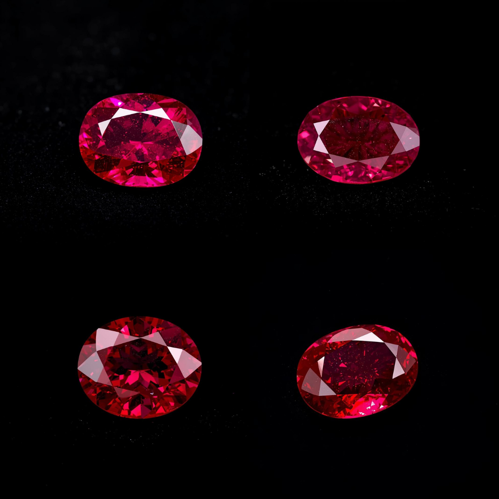

ルビー
宝石の王
ミャンマー産のピジョンブラッドルビーとタイ産の鮮紅色ルビーは、カラーストーンの頂点に立つ宝石です。その濃厚な赤色は情熱、活力、繁栄を象徴し、東西の文化で最も尊ばれる宝石です。
価格のご相談
ルビーを選ぶ理由
- ✓ 日常使用に最適な優れた耐久性（モース硬度9）
- ✓ タイ、ミャンマー、モザンビークからの倫理的調達
- ✓ 婚約指輪や記念日ジュエリーの人気の選択肢
- ✓ 「四大貴石」の一つ
- ✓ 国際認証取得可能（GIA / Gübelin / SSEF）
高品質ルビーは同等品質のダイヤモンドよりも稀少で、極めて価値の高い投資珍品です。
色彩と品質ガイド
色彩
「ピジョンブラッド」— わずかに紫がかった鮮やかな赤色が最も珍重されます。飽和度が高く、ブラウン系色味のない鮮紅色が最高価格を達成します。
クラリティ（透明度）
ルビーの微細な内包物は許容されます — 完全無瑕疵のルビーは極めて稀です。シルキーな内包物は天然形成の証です。
処理
加熱処理は標準的な業界慣行です。未加熱（ノーヒート）のルビーには大幅なプレミアムがつきます。
認証
Gübelin、SSEF等の世界トップクラスの鑑定機関が高品質ルビーの産地と処理の報告書を提供しています。
カラットサイズガイド
- 1カラット未満：繊細で優雅、手頃な贅沢
- 1〜2カラット：婚約指輪に理想的
- 2〜3カラット：稀少で高いコレクション価値
- 3〜5カラット：博物館級の投資珍品
- 5カラット以上：超稀少オークション級宝石
3カラット以上の高品質ルビーは同等のダイヤモンドよりも稀少で、時間とともに大幅に価値が上昇します。
文化と伝統的意義
- 誕生石：7月
- 象徴：情熱、活力、繁栄、保護
- 惑星との結びつき：太陽（ヴェーダ占星術 — リーダーシップと自信を高める）
- 日本文化：情熱と勝利の象徴
ルビーは東洋文化において縁起の良い赤色から特に珍重され、繁栄、勝利、そして魔除けの力があるとされています。
オーストラリア市場での投資価値
ルビーはオーストラリアおよびグローバル市場で卓越した値上がり実績を示しています。高品質ミャンマー産ピジョンブラッドルビーはオークションで繰り返し記録的な価格を達成しています。高品質原石の日々の希少化に伴い、投資級ルビーは大半の資産クラスを上回るパフォーマンスを続けています。
価格のご相談
高品質ルビーをお探しですか？
💎 あなただけの宝石プランを発見
📩 専門の宝石鑑定士からカスタム価格のご提案